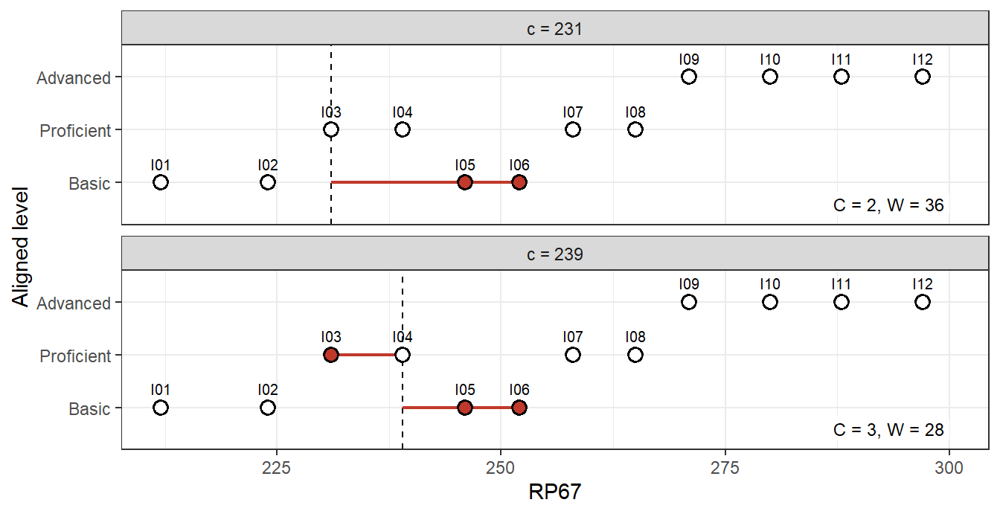
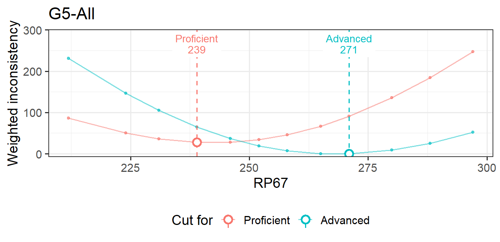
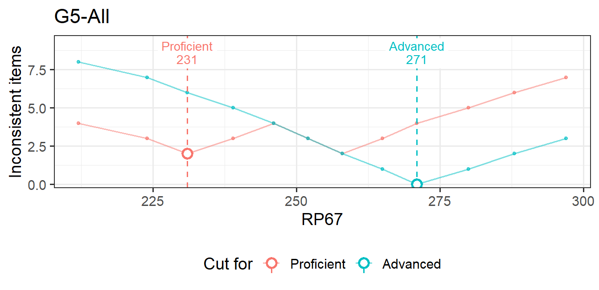

items <- data.frame(
Grade = "G5",
Item_ID = c(paste0("I0", 1:9), paste0("I", 10:12)),
RP67 = c(212, 224, 231, 239, 246, 252, 258, 265, 271, 280, 288, 297)
)
labels <- c("Basic", "Proficient", "Advanced")
alignments <- list( # 1 = Basic, 2 = Proficient, 3 = Advanced
P1 = c(1, 1, 2, 2, 1, 2, 2, 2, 3, 3, 3, 3),
P2 = c(1, 1, 1, 2, 1, 1, 2, 3, 3, 2, 3, 3),
P3 = c(1, 2, 3, 1, 2, 1, 2, 2, 2, 3, 3, 3)
)
ratings <- do.call(rbind, lapply(names(alignments), function(p) data.frame(
Grade = "G5", Table = "T1", Panelist = p, Item_ID = items$Item_ID,
ALD = labels[alignments[[p]]])))
head(ratings, 3)
#> Grade Table Panelist Item_ID ALD
#> 1 G5 T1 P1 I01 Basic
#> 2 G5 T1 P1 I02 Basic
#> 3 G5 T1 P1 I03 ProficientHow embedded standard setting works
This article explains what emss computes and why. It works through a 12-item example by hand, checks every hand calculation against emss, and then states the mathematical properties of the two criteria, ESS-Count and ESS-Weight, with short proofs. For day-to-day use of the package, start with Getting started. Manual cut scores, the bootstrap, and Item Location have their own articles.
1 The idea
In embedded standard setting (ESS; Lewis & Cook, 2020), content experts align each test item to the performance level descriptor (PLD), also called the achievement level descriptor (ALD), whose knowledge and skills the item calls for. The alignment is part of item development rather than a separate standard-setting meeting, so the performance standards are embedded in the test’s design. ESS has been used in K-12 assessment and in credentialing (Lewis, Graw, & Baker, 2024).
Each item also has a location on the reporting scale, typically a response-probability location such as RP67: the scale score at which an examinee has a 67% chance of answering the item correctly. When the descriptors and the scale tell the same story, items aligned to higher levels sit higher on the scale. A cut score for a level is then placed where the order of the items on the scale agrees best with their aligned levels:
- items aligned at or above the level should be located at or above its cut score, and
- items aligned below the level should be located below it.
An item on the wrong side of a cut is inconsistent with that cut. ESS places every cut where inconsistency is smallest. The two versions differ only in how they measure it:
- ESS-Count counts the inconsistent items (i.e., where matters, not how far).
- ESS-Weight adds up how far the inconsistent items are from the cut on the location scale (i.e., how far matters, not where).
Lewis, Lee and Choi (2021) compared the two algorithms.
2 Notation
The analysis is carried out separately for each unit: one grade, one rating round and one item subset (all items, or one content domain; see Analysis units). Within a unit:
| Symbol | Meaning |
|---|---|
| \(n\) | number of items |
| \(b_i\) | location of item \(i\) (the column named by location, such as RP67) |
| \(b_{(1)} \le \dots \le b_{(n)}\) | locations in increasing order; the position \(p\) of an item in this order is its page in the ordered item booklet |
| \(K\) | number of performance levels, ordered \(1 < 2 < \dots < K\) |
| \(a_{ij}\) | level panelist \(j\) aligned item \(i\) to (\(j = 1, \dots, J\)) |
| \(a_i\) | the item’s aligned level used for the cut (one panelist’s \(a_{ij}\), or the modal level across panelists) |
| \(k\) | a cut level, \(k = 2, \dots, K\): the cut \(c_k\) is the lowest score in level \(k\) |
| \(U_k = \{i : a_i \ge k\}\) | items aligned at or above level \(k\) (“upper” items) |
| \(L_k = \{i : a_i < k\}\) | items aligned below level \(k\) (“lower” items); \(n_{<k} = \lvert L_k \rvert\) |
| \(\sigma\) | the grade’s SD; weights are divided by it (default 1) |
| \(o_i\) | empirical level of item \(i\), implied by the cut scores |
Items with the same location are ordered by Order_of_Difficulty and then by input order. This affects only the page numbers shown, not the cut scores.
3 A worked example
Twelve items in grade “G5” have RP67 locations between 212 and 297. Three panelists aligned each item to one of three levels: Basic, Proficient and Advanced.
A small score distribution provides impact data:
scores <- data.frame(Grade = "G5", Score = seq(200, 310, by = 5))
scores$Freq <- round(400 * dnorm(scores$Score, mean = 255, sd = 25))ess_data() combines the inputs, and emstans() runs both criteria:
d <- ess_data(ratings, items, examinees = scores, levels = labels)
res_w <- emstans(data = d, location = "RP67", method = "weight")
res_c <- emstans(data = d, location = "RP67", method = "count")
res_w
#> Embedded Standard Setting
#> method: ESS-Weight | location: RP67 | 1 unit(s)
#>
#> Modal cut scores (all tables):
#> G5-All Proficient 239.000 Advanced 271.000
#>
#> Use extract() for tables, report() for the full report.
res_c
#> Embedded Standard Setting
#> method: ESS-Count | location: RP67 | 1 unit(s)
#>
#> Modal cut scores (all tables):
#> G5-All Proficient 231.000 Advanced 271.000
#>
#> Use extract() for tables, report() for the full report.The two criteria agree on the Advanced cut and disagree on the Proficient cut. The rest of this article shows where every one of these numbers comes from.
4 Step 1: one aligned level per item
Cut scores are estimated for each panelist’s own alignments and for the modal alignment across panelists. The modal level of item \(i\) is the level chosen by the most panelists:
\[ a_i = \operatorname*{arg\,max}_{\ell} \; \#\{\, j : a_{ij} = \ell \,\}. \]
When two or more levels tie for most votes, the tie goes to the level chosen by the panelist whose alignments agree best with the item locations, measured by the Pearson correlation across the unit’s items:
\[ r_j = \operatorname{cor}\big( (a_{1j}, \dots, a_{nj}),\; (b_1, \dots, b_n) \big). \]
If panelists have equal correlations, the one whose ID comes first in sorted order wins. Modal levels are computed for each table and for all tables together. The all-tables modal result is the one used for agreement, the item review and impact.
In the example, item I03 got three different levels, one from each panelist:
wide <- data.frame(items[, c("Item_ID", "RP67")], alignments)
r <- sapply(alignments, cor, y = items$RP67)
round(r, 3)
#> P1 P2 P3
#> 0.868 0.813 0.602
wide$modal <- res_w$modal_items$aligned
wide[3, ]
#> Item_ID RP67 P1 P2 P3 modal
#> 3 I03 231 2 1 3 2P1 has the highest correlation, so I03 takes P1’s level, Proficient (2). The correlations are the same ones emss reports with each panelist’s cut scores:
From here on, \(a_i\) is the modal level. In booklet order it is
b <- items$RP67
a <- wide$modal
rbind(page = 1:12, RP67 = b, aligned = a)
#> [,1] [,2] [,3] [,4] [,5] [,6] [,7] [,8] [,9] [,10] [,11] [,12]
#> page 1 2 3 4 5 6 7 8 9 10 11 12
#> RP67 212 224 231 239 246 252 258 265 271 280 288 297
#> aligned 1 1 2 2 1 1 2 2 3 3 3 35 Step 2: inconsistency of a candidate cut
Take cut level \(k\) and a candidate cut score \(c\). Item \(i\) is inconsistent with \(c\) when it lies on the wrong side:
\[ \delta_{ik}(c) = \underbrace{\mathbf 1[\,a_i \ge k,\; b_i < c\,]}_{\text{upper item below the cut}} + \underbrace{\mathbf 1[\,a_i < k,\; b_i \ge c\,]}_{\text{lower item at or above the cut}} . \]
An item exactly at the cut counts as being in the level the cut opens (scores at or above \(c_k\) are in level \(k\)). ESS-Count and ESS-Weight are
\[ C_k(c) = \sum_{i=1}^{n} \delta_{ik}(c), \qquad W_k(c) = \frac{1}{\sigma} \sum_{i=1}^{n} \delta_{ik}(c)\, \lvert b_i - c \rvert . \]
The figure shows two candidates for the Proficient cut (\(k = 2\)). Items aligned Proficient or Advanced are the upper items. Inconsistent items are drawn filled, with a segment showing their distance to the cut.
#> Warning: The `label.size` argument of `geom_label()` is deprecated as of ggplot2 3.5.0.
#> ℹ Please use the `linewidth` argument instead.
At \(c = 231\), two Basic items, I05 and I06, are at or above the cut, at distances 15 and 21: \(C_2 = 2\) and \(W_2 = 36\). At \(c = 239\), the same two items are closer (7 and 13), but the Proficient item I03 at 231 is now below the cut (distance 8): \(C_2 = 3\) and \(W_2 = 28\). Count prefers 231 and Weight prefers 239.
6 Step 3: the profile and the cut
The inconsistency profile evaluates \(C_k\) and \(W_k\) at every candidate. emss uses the item locations themselves as candidates (the next section shows that nothing is lost). A direct implementation of the definitions takes a few lines:
ess_by_hand <- function(b, a, k, sd = 1) {
t(sapply(b, function(c) {
bad <- (a >= k & b < c) | (a < k & b >= c)
c(count = sum(bad), weight = sum(abs(b[bad] - c)) / sd)
}))
}
prof <- data.frame(page = 1:12, RP67 = b, aligned = a,
C2 = ess_by_hand(b, a, 2)[, "count"], W2 = ess_by_hand(b, a, 2)[, "weight"],
C3 = ess_by_hand(b, a, 3)[, "count"], W3 = ess_by_hand(b, a, 3)[, "weight"])
prof
#> page RP67 aligned C2 W2 C3 W3
#> 1 1 212 1 4 86 8 231
#> 2 2 224 1 3 50 7 147
#> 3 3 231 2 2 36 6 105
#> 4 4 239 2 3 28 5 65
#> 5 5 246 1 4 28 4 37
#> 6 6 252 1 3 34 3 19
#> 7 7 258 2 2 46 2 7
#> 8 8 265 2 3 67 1 0
#> 9 9 271 3 4 91 0 0
#> 10 10 280 3 5 136 1 9
#> 11 11 288 3 6 184 2 25
#> 12 12 297 3 7 247 3 52emss returns the same profile for the modal alignment:
The cut for level \(k\) is the candidate that minimizes the chosen criterion. Ties are common, so the rule has three parts:
\[ \hat c_k = \begin{cases} \text{ESS-Weight:} & \text{minimize } W_k, \text{ then } C_k, \text{ then the page,}\\[2pt] \text{ESS-Count:} & \text{minimize } C_k, \text{ then } W_k, \text{ then the page,} \end{cases} \]
in that order, so the earliest page wins only when both criteria tie. Each level is minimized separately. Profile values are rounded to 9 decimals before they are compared. This removes floating-point noise and nothing else, so the minimum is exact.
The example contains every kind of tie:
- Proficient, Weight. \(W_2 = 28\) at pages 4 and 5 (a flat stretch of the profile). Page 4 has the lower count (3 vs 4), so \(\hat c_2 = 239\).
- Proficient, Count. \(C_2 = 2\) at pages 3 and 7. These pages are not adjacent, and page 5 between them has \(C_2 = 4\). Page 3 has the lower weight (36 vs 46), so \(\hat c_2 = 231\).
- Advanced, Weight. \(W_3 = 0\) at pages 8 and 9. At \(c = 265\), item I08 (Proficient, located at 265) is inconsistent because it sits exactly at the cut, but its distance is 0. The count breaks the tie (1 vs 0), so \(\hat c_3 = 271\). Without the count tie-break, a zero-distance inconsistency would go unnoticed.
plot() draws the profile of a unit’s modal result, with the selected cuts:


7 Properties of the two criteria
This section states what the definitions imply. For readability, the proofs assume distinct item locations. Equal locations change only the bookkeeping at ties, and every statement was also checked numerically on random data with tied locations.
Two quantities appear throughout. For the candidate at page \(p\), let
\[ u_k(p) = \#\{\, i \in U_k : \text{page}(i) < p \,\} \quad\text{and}\quad l_k(p) = \#\{\, i \in L_k : \text{page}(i) \ge p \,\} \]
be the upper items below the cut and the lower items at or above it. By definition \(C_k(b_{(p)}) = u_k(p) + l_k(p)\).
7.1 Only item locations need to be tried
Between two neighbouring item locations, no item changes side, so:
- \(C_k(c)\) is constant on each interval \((b_{(p-1)}, b_{(p)}]\) and on \((-\infty, b_{(1)}]\), equal to its value at \(b_{(p)}\).
- \(W_k(c)\) is linear on each interval \([b_{(p-1)}, b_{(p)}]\) and continuous, because an item that crosses the cut is at distance 0 when it does.
A linear function on an interval is smallest at one of its ends, so the minimum of \(W_k\) over all \(c \le b_{(n)}\) is reached at an item location, and the same holds for \(C_k\). The only cuts not tried are those above the hardest item, which would leave level \(k\) with no items. emss therefore always places a cut on an item, and the cut item’s page is reported with it.
7.2 ESS-Count is a walk through the booklet
Moving the candidate from page \(p\) to page \(p+1\) moves exactly one item, the item on page \(p\), from the “at or above” side to the “below” side. If that item is an upper item, it becomes inconsistent; if it is a lower item, it stops being inconsistent:
\[ C_k(b_{(p+1)}) - C_k(b_{(p)}) = \begin{cases} +1 & a_{(p)} \ge k,\\ -1 & a_{(p)} < k, \end{cases} \qquad C_k(b_{(1)}) = n_{<k}. \]
So the Count profile is a walk that starts at the number of lower items and steps up for every upper item and down for every lower item in booklet order. ESS-Count puts the cut where the walk is lowest. The walk can come back to the same low value several times, which is why Count ties are common and need not be adjacent. Here is the Proficient walk in the example:
steps <- ifelse(a >= 2, +1, -1)
walk <- sum(a < 2) + c(0, cumsum(steps))[1:12]
rbind(page = 1:12, aligned = a, step = steps, C2 = walk)
#> [,1] [,2] [,3] [,4] [,5] [,6] [,7] [,8] [,9] [,10] [,11] [,12]
#> page 1 2 3 4 5 6 7 8 9 10 11 12
#> aligned 1 1 2 2 1 1 2 2 3 3 3 3
#> step -1 -1 1 1 -1 -1 1 1 1 1 1 1
#> C2 4 3 2 3 4 3 2 3 4 5 6 7
identical(walk, prof$C2)
#> [1] TRUEThe walk depends only on the order of the aligned levels in the booklet. The distances between items never enter it.
7.3 ESS-Weight is a quantile of the item locations
Write \(\sigma W_k(c) = \sum_{i \in U_k} (c - b_i)_+ + \sum_{i \in L_k} (b_i - c)_+\), where \((x)_+ = \max(x, 0)\). Between neighbouring locations, the derivative with respect to \(c\) is
\[ \sigma \frac{d W_k}{d c} = \#\{ i \in U_k : b_i < c \} - \#\{ i \in L_k : b_i > c \} = \underbrace{\#\{ i : b_i < c \}}_{\text{items below the cut}} - \; n_{<k}, \]
because the lower items above the cut are all lower items minus those below it. Above page \(p\) there are \(p\) items below the cut, so the slope between pages \(p\) and \(p+1\) is \((p - n_{<k}) / \sigma\):
\[ W_k(b_{(p+1)}) - W_k(b_{(p)}) = \frac{(p - n_{<k}) \,\big(b_{(p+1)} - b_{(p)}\big)}{\sigma}. \]
The slope is negative before page \(n_{<k}\), zero between pages \(n_{<k}\) and \(n_{<k}+1\), and positive after. This has three consequences:
- \(W_k\) is convex, and its minimum is reached at pages \(n_{<k}\) and \(n_{<k} + 1\), with equal values.
- The ESS-Weight cut for level \(k\) is the location of the item on page \(n_{<k}\) or page \(n_{<k} + 1\). The count breaks the tie: it is page \(n_{<k}\) if that item is aligned at or above \(k\) and page \(n_{<k} + 1\) otherwise (from the walk in the previous section).
- Which items are aligned below level \(k\) does not matter, only how many. The alignment pattern decides only between the two neighbouring items. ESS-Weight places the cut so that the number of items below it matches the number of items aligned below the level. It is the same property that makes the median minimize the total absolute distance.
In the example, \(n_{<2} = 4\) and \(n_{<3} = 8\). The minima of \(W_2\) are at pages 4 and 5 and those of \(W_3\) at pages 8 and 9. Item I04 on page 4 is aligned Proficient (\(\ge 2\)), so \(\hat c_2\) is on page 4. Item I08 on page 8 is aligned Proficient (\(< 3\)), so \(\hat c_3\) is on page 9:
The minimal weight itself still reflects the pattern: it is the total distance of the inconsistent items, here 28 for Proficient and 0 for Advanced. What the pattern cannot do is move the Weight cut by more than one item.
7.4 Location scale and SD
Both properties above depend only on the order of the items, not on the distances between them. Hence:
- For any strictly increasing transformation \(g\) of the location scale (for example theta to scale scores, or a nonlinear scale conversion), the ESS-Weight cut is on the same item, and the cut score is \(g(\hat c_k)\).
- The Count profile is unchanged by \(g\). The ESS-Count cut can change only when there is a Count tie, because the tie is broken by the weight, which does use distances.
- A change of location that reorders items can move both cuts. For example, RP50 and RP67 locations from a 2PL or 3PL model order items differently when item discriminations differ. Under the Rasch model, every RP value shifts all items equally, so the cuts are on the same items.
- Dividing by the SD \(\sigma\) rescales every weight by the same factor. It changes the reported weights, which then are in SD units and comparable across grades, but never the cut scores.
d_theta <- d
d_theta$items$theta <- (d$items$RP67 - 250) / 30 # a linear scale change
d_theta$items$expo <- exp(d_theta$items$theta) # a nonlinear, increasing one
sapply(c("RP67", "theta", "expo"), function(loc) {
m <- emstans(data = d_theta, location = loc)$modal
m$page[m$table == "All"]
})
#> RP67 theta expo
#> [1,] 4 4 4
#> [2,] 9 9 9The pages of the two all-tables cuts are the same on all three scales.
7.5 Cut scores are always in order
The cut for each level is found separately, yet the cuts never cross: \(\hat c_2 \le \hat c_3 \le \dots \le \hat c_K\).
- ESS-Weight. \(n_{<k}\) increases with \(k\), so the candidate pages \(\{n_{<k}, n_{<k}+1\}\) move up with \(k\). When \(n_{<k} = n_{<k+1}\) (no item is aligned to level \(k\)), the two profiles are identical, the two cuts fall on the same item, and level \(k\) is empty.
- ESS-Count. Going from level \(k\) to \(k+1\) moves the items aligned to level \(k\) from the upper to the lower group. This adds the term \(\#\{a_i = k, b_i \ge c\} - \#\{a_i = k, b_i < c\}\) to the Count and \(\sum_{a_i = k} (b_i - c)/\sigma\) to the Weight, and both are nonincreasing in \(c\). Suppose \(\hat c_{k+1} < \hat c_k\). Because the added terms are nonincreasing, \(\hat c_{k+1}\) can only win if it already tied with \(\hat c_k\) on \(C_k\), and then the tie-break that selected \(\hat c_k\) means \(W_k(\hat c_k) < W_k(\hat c_{k+1})\). That inequality survives the added Weight term, so \(\hat c_k\) would also beat \(\hat c_{k+1}\) for level \(k+1\), a contradiction. The weight tie-break is what guarantees this.
Smoothed cut scores (smooth = TRUE, below) are not covered by these arguments.
7.6 What the minimum values add up to
Because the cuts are ordered, an item’s empirical level satisfies \(o_i \ge k \iff b_i \ge \hat c_k\), so item \(i\) is inconsistent with exactly \(\lvert a_i - o_i \rvert\) of the cuts (the cuts between its aligned and its empirical level). Summing over levels:
\[ \sum_{k=2}^{K} C_k(\hat c_k) = \sum_{i=1}^{n} \lvert a_i - o_i \rvert, \qquad \sum_{k=2}^{K} W_k(\hat c_k) = \frac{1}{\sigma} \sum_{i=1}^{n} \sum_{k \text{ between } o_i \text{ and } a_i} \lvert b_i - \hat c_k \rvert . \]
Since the separate minima are ordered, they also minimize these sums over all ordered sets of cuts. ESS-Count chooses the cut scores that minimize the total level disagreement \(\sum_i \lvert a_i - o_i \rvert\) between aligned and empirical levels. ESS-Weight minimizes the total distance from each misplaced item to every cut it is on the wrong side of.
7.7 Count or Weight?
| ESS-Count | ESS-Weight | |
|---|---|---|
| Minimizes | number of misplaced items; across levels, total level disagreement | total distance of misplaced items from the cut |
| Profile | a walk, with possibly several separated minima | convex, minimum at pages \(n_{<k}\) and \(n_{<k}+1\) |
| Depends on | the order of aligned levels in the booklet | the number of items aligned below each level; the pattern only picks between two neighbouring items |
| Ties | frequent (integer values), broken by the weight | at most two neighbouring items, broken by the count |
| Location scale | order only, except weight tie-breaks | order only |
ESS-Weight is the default in emss. Its cuts are stable: changing one item’s alignment changes \(n_{<k}\) by at most one, so it moves a cut by at most two pages. ESS-Count responds to where the misaligned items are, so it is the criterion to look at when the question is which items the panelists placed out of order. Reporting both is cheap, and large differences between them are worth a look at the item review.
8 From cut scores to the other results
8.1 Empirical levels
Given the cuts, the empirical (operational) level of an item is the level its location falls in:
\[ o_i = 1 + \#\{\, k : \hat c_k \le b_i \,\}. \]
An item exactly at a cut belongs to the level the cut opens. If two cuts fall on the same item, the level between them is empty and items at that location go to the higher level.
8.2 Agreement
The crosstab of empirical by aligned level, with entries \(n_{\ell m}\) (items with \(o_i = \ell\) and \(a_i = m\)), gives:
- exact agreement \(\sum_\ell n_{\ell\ell} / n\), adjacent disagreements (\(\lvert a_i - o_i \rvert = 1\)) and discrepant ones (\(\ge 2\));
- the weighted kappa (Cohen, 1968) with quadratic weights, as computed by
psych::cohen.kappa():
\[ \kappa_w = 1 - \frac{\sum_{\ell,m} (\ell - m)^2\, n_{\ell m}} {\sum_{\ell,m} (\ell - m)^2\, n_{\ell \cdot}\, n_{\cdot m} / n}. \]
ag <- extract(res_w, "detailed")
ag$agreement
#> unit type n agree disagree adjacent discrepant weighted_kappa
#> 1 G5-All exact 12 9 3 3 0 0.8
#> 2 G5-All ec 12 9 3 3 0 0.8
ct <- xtabs(n ~ operational + aligned, ag$crosstab[ag$crosstab$type == "exact", ])
ct
#> aligned
#> operational Basic Proficient Advanced
#> Basic 2 1 0
#> Proficient 2 3 0
#> Advanced 0 0 4
w <- outer(1:3, 1:3, function(l, m) (l - m)^2)
1 - sum(w * ct) / sum(w * outer(rowSums(ct), colSums(ct)) / sum(ct))
#> [1] 0.88.3 Item review
For each inconsistent item, the item review reports a signed distance from the cut that bounds its aligned level. Writing \(\hat c_{K+1} = +\infty\):
\[ d_i = \begin{cases} b_i - \hat c_{a_i} & a_i > o_i \quad\text{(located below its aligned level; } d_i < 0\text{)},\\[2pt] b_i - (\hat c_{a_i + 1} - 1) & a_i < o_i \quad\text{(located above its aligned level; } d_i > 0\text{)},\\[2pt] 0 & a_i = o_i . \end{cases} \]
The “\(-1\)” treats the top of a level as one score point below the next cut, as on an integer scale-score metric. On a continuous metric such as theta it adds one unit to the distance of items located too high. The review also reports \(\lvert d_i \rvert / \sigma\).
rv <- extract(res_w, "review")
rv[rv$status != "Consistent", c("item_id", "page", "aligned", "operational", "location",
"distance", "status")]
#> item_id page aligned operational location distance status
#> 3 I03 3 Proficient Basic 231 -8 Inconsistent
#> 5 I05 5 Basic Proficient 246 8 Inconsistent
#> 6 I06 6 Basic Proficient 252 14 InconsistentItem I05 is 7 points above the Proficient cut (its contribution to \(W_2\)), and its review distance is \(246 - (239 - 1) = 8\).
8.4 Essential consistency
A small misplacement may not be worth flagging. With an essential consistency margin \(\mathrm{EC}\) on the location scale (the setup’s EC column, or ess_data(ec = )):
- the item review labels an inconsistent item Essentially Consistent when \(0 < \lvert d_i \rvert \le \mathrm{EC}\) and Inconsistent when \(\lvert d_i \rvert > \mathrm{EC}\);
- the EC-adjusted crosstab (type
"ec") treats items with \(\lvert d_i \rvert < \mathrm{EC}\) as agreeing, setting their aligned level to their empirical level.
An item exactly at the margin counts as essentially consistent in the review but not in the crosstab. EC never changes the cut scores. With EC = 10 in the example, I03 and I05 are within the margin and I06 is not:
res_ec <- emstans(data = ess_data(ratings, items, levels = labels, ec = 10), location = "RP67")
extract(res_ec, "review")[c(3, 5, 6), c("item_id", "distance", "status")]
#> item_id distance status
#> 3 I03 -8 Essentially Consistent
#> 5 I05 8 Essentially Consistent
#> 6 I06 14 Inconsistent
extract(res_ec, "detailed")$agreement
#> unit type n agree disagree adjacent discrepant weighted_kappa
#> 1 G5-All exact 12 9 3 3 0 0.8000
#> 2 G5-All ec 12 11 1 1 0 0.93338.5 Panelist, median and average cuts
Every panelist’s own alignments go through Steps 2 and 3, giving panelist cuts \(\hat c_{jk}\) with their pages. For each table and for all tables, emss reports two summaries of them. The median cut is the cut score at the middle page (the mean of the two middle panelists’ cut scores when \(J\) is even), which equals the median of the panelist cut scores. The average cut is \(\bar c_k = \frac1J \sum_j \hat c_{jk}\), and its page is that of the panelist whose cut is closest to it.
pan[, c("panelist", "cut_level", "page", "cut_score", "count", "weight")]
#> panelist cut_level page cut_score count weight
#> 1 P1 Proficient 3 231 1 15
#> 3 P2 Proficient 6 252 2 13
#> 5 P3 Proficient 3 231 3 36
#> 2 P1 Advanced 9 271 0 0
#> 4 P2 Advanced 8 265 1 15
#> 6 P3 Advanced 9 271 2 40
ind <- extract(res_w, "individual")
rbind(median = ind$median$cut_score[ind$median$table == "All"],
average = ind$average$cut_score[ind$average$table == "All"])
#> [,1] [,2]
#> median 231 271
#> average 238 269The modal cut and the summaries of panelist cuts answer different questions. The modal cut is the best cut for the group’s consensus alignment. The median and average describe the spread of individual judgements.
8.6 Impact
With examinee score frequencies \(f_s\) (\(N = \sum_s f_s\)), the percentage of examinees in level \(k\), at or above it, and below it are
\[ \text{in}_k = \frac{100}{N} \sum_{\hat c_k \le s < \hat c_{k+1}} f_s, \qquad \text{at or above}_k = \frac{100}{N} \sum_{s \ge \hat c_k} f_s, \qquad \text{below}_k = \frac{100}{N} \sum_{s < \hat c_k} f_s, \]
with \(\hat c_1 = -\infty\) and \(\hat c_{K+1} = +\infty\). The impact table also gives each level’s pages in the ordered item booklet: level \(k\) runs from the page of \(\hat c_k\) to the page before \(\hat c_{k+1}\).
extract(res_w, "summary")
#> unit level page_from page_to cut_score pct_in pct_at_above pct_below
#> 1 G5-All Basic 1 3 NA 24.4 100.0 NA
#> 2 G5-All Proficient 4 8 239 51.3 75.6 24.4
#> 3 G5-All Advanced 9 12 271 24.4 24.4 75.68.7 Analysis units
Everything above is computed per unit: grade × round × item subset.
- Grades are always analysed separately, each with its own levels, SD and EC.
-
Rounds: when the ratings contain several rounds, each round is a separate unit, for example
G5-All Round 2. -
Domains: with
by_domain = TRUE, each content domain is also analysed on its own items, in addition to all items (G5-Algebra, …).
9 Smoothed cut scores
With smooth = TRUE, each profile column is smoothed before the minimum is taken. A Gaussian GAM, \(y = f(b) + \varepsilon\), with a penalized regression spline \(f\) (mgcv::gam(y ~ s(b, k = q)), \(q = 10\) basis functions when \(n > 20\), otherwise \(n/2\)) is fitted to the profile values at the item locations. The cut is the minimizer of \(\hat f\) over 200 equally spaced points across the location range (rounded to 2 decimals), and its page is the first item at or above it. Smoothed cuts need not be item locations, and the ordering guarantee above does not apply to them.
10 How emss computes the profiles
Evaluating the definitions directly costs \(O(n^2)\) per level: \(n\) candidates, each checked against \(n\) items. emss sorts the upper and lower locations once and keeps their cumulative sums \(S_U\) and \(S_L\). For a candidate \(c\), a binary search gives \(u = \#\{U: b < c\}\) and \(\lambda = \#\{L: b < c\}\), and then
\[ C_k(c) = u + (n_L - \lambda), \qquad \sigma W_k(c) = \big(c\,u - S_U(u)\big) + \big(S_L(n_L) - S_L(\lambda) - c\,(n_L - \lambda)\big), \]
with \(n_L = n_{<k}\). All candidates together cost \(O(n \log n)\). The test suite checks this against the direct definition (ess_by_hand() above is the same check in miniature).
11 References
Cohen, J. (1968). Weighted kappa: Nominal scale agreement provision for scaled disagreement or partial credit. Psychological Bulletin, 70(4), 213–220.
Lewis, D., & Cook, R. (2020). Embedded standard setting: Aligning standard-setting methodology with contemporary assessment design principles. Educational Measurement: Issues and Practice, 39(1), 8–21. https://doi.org/10.1111/emip.12318
Lewis, D., Graw, M., & Baker, M. (2024). Embedded standard setting for credentialing. Journal of Applied Testing Technology, 25(1), 1–14.
Lewis, D., Lee, S., & Choi, S. (2021). An investigation of two embedded standard setting cut score estimation algorithms: ESS-Count and ESS-Weight [Paper presentation]. Annual Meeting of the National Council on Measurement in Education, virtual.
Wood, S. N. (2017). Generalized additive models: An introduction with R (2nd ed.). Chapman and Hall/CRC.